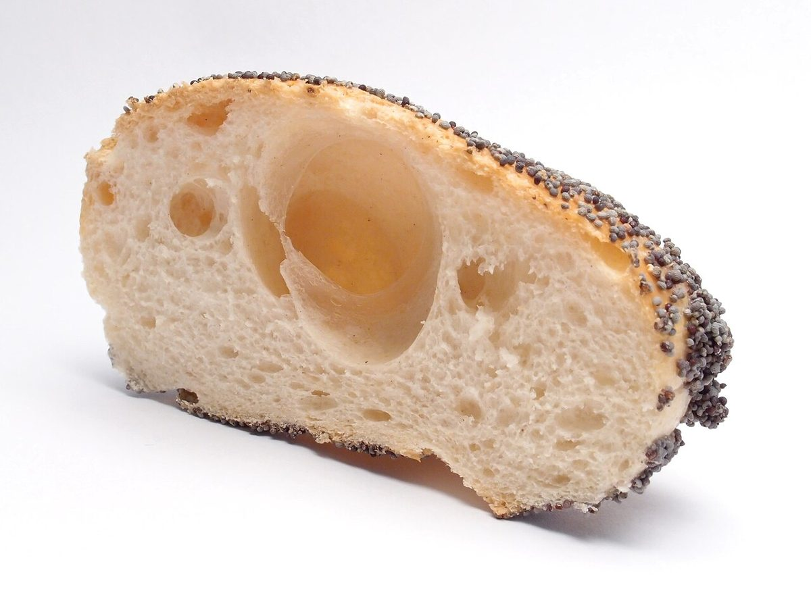

PART 02反射鏡 / reflector
店のこと
お店について確認できているのは、所在地とInstagramのアカウントだけです。
確認できていること
- 店名は「HASHIGOYA」、業種はカフェ
- 所在地は京都府宮津市大垣11(〒629-2242)
- 電話番号はなし。連絡はInstagramから
- 営業時間・定休日・メニュー・価格・ご予約・駐車場は準備中
反射鏡のたとえ
反射鏡は、光を一方向にそろえて遠くへ届ける部品です。このページでは、確認できた事実だけを一つに集めて映す役目に見立てました。制作側の連想で、お店の理念・由来とは無関係です。

写真のイメージ
断面を並べて
撮影地不明のフリー素材です。実際のお店の商品ではありません。